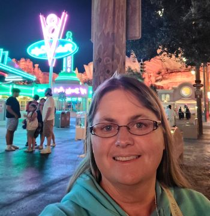

Hello everyone, my name is Charity, I grew up in Bozeman Montana & Northern California.
I currently live in Kalispell Montana with my husband of 25 years and our 6 children (well they grew up way to quickly so not all of them currently live at home).
Our one and only son is currently serving a mission in Minneapolis Minnesota.
Our middle child is currently pursuing a degree in Biology at BYU Provo, she just started her sophomore year.
We have one set of twins they are our oldest and still live at home.
Our two youngest are in High School (freshman & senior).
Boy I feel really old now! I am working towards my bachelor’s degree in applied technology.
I have always had a love for computers. I wrote my 1st code on an old Texas Instrument with a voice synthesizer...lol, yep I am old.
The little stick figure man would jump up and down and the code was like three pages long.
Well that is a little about me. I hope to get to know you all better as the semester goes forward.